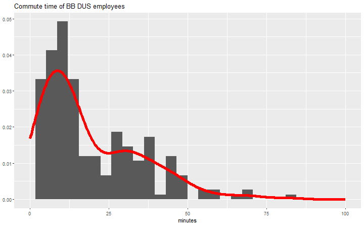
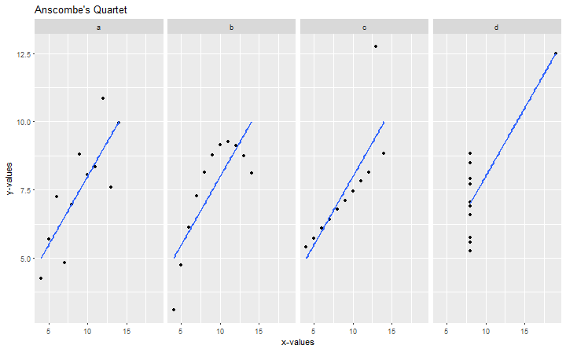

Statistics 101
A brief overview with Game Design examples
Christoph Safferling
Head of Game Analytics and User Research
Ubisoft Blue Byte
Statistics
The practice or science of collecting and analysing numerical data in large quantities, especially for the purpose of inferring proportions in a whole from those in a representative sample.
OED definition
Statistics is the study of the collection, analysis, interpretation, presentation, and organization of data.
The Oxford Dictionary of Statistical Terms
Randomness
The quality or state of lacking a pattern or principle of organization; unpredictability
OED definition
History
From Histograms to Distributions
Graphs and Functions
Punktdiagramm zum Einstieg: Spielerlevel x, anzahl Gold y
Histograms
# commute dataset
load("../commute-distances.Rdata")
# warning suppressed: non-finite values removed
dta.distance %>%
#filter(minutes < 120) %>%
ggplot()+
geom_histogram(aes(x=minutes))+
#geom_line(stat="density", aes(x=minutes), colour = "red")+
xlim(0, 100)+
labs(
title = "Commute time of BB DUS employees",
y = NULL
)

Density estimates
# warning suppressed: non-finite values removed
dta.distance %>%
#filter(minutes < 120) %>%
ggplot()+
geom_histogram(aes(x=minutes, y=..density..))+
geom_line(stat="density", aes(x=minutes), colour = "red", size = 2)+
xlim(0, 100)+
labs(
title = "Commute time of BB DUS employees",
y = NULL
)

Probability Density Function
A function of a discrete variable whose integral over any interval is the probability that the variate specified by it will lie within that interval.
OED dictionary
Density Functions and Distributions
Uniform distribution
# x values for plotting
x <- seq(1, 6, by = 1)
ggplot()+
# uniform distribution
geom_bar(
aes(x=x, y = (..count..)/sum(..count..)), size = 1.5#, colour = cbgPalette[6]
)+
labs(x = "", y = "", title = "Uniform distribution", subtitle = "A D6 die roll")+
# theme(
# axis.text.y = element_blank(),
# axis.ticks.y = element_blank()
# )+
scale_x_continuous(breaks = 1:6)#+

#scale_y_continuous(labels = percent)
Poisson (Count) distribution
ggplot()+
# poisson distribution
geom_point(
aes(x=unique(as.integer(x)), y=dpois(unique(as.integer(x)), 2)), size = 3.5#, colour = cbgPalette[2]
)+
labs(x = "", y = "", title = "Poisson (Count) distribution")

Normal (Gaussian) distribution
x <- seq(-5, 5, by = 0.01)
ggplot()+
# normal distribution
geom_line(
aes(x=x, y=dnorm(x)), size = 1.5#, colour = cbgPalette[6]
)+
# # lognormal distribution
# geom_line(
# aes(x=x, y=dlnorm(x)), size = 1.5, colour = cbgPalette[6]
# )+
labs(x = "", y = "", title = "(Standard-) Normal distribution")

explain distributions
- most (nice) distributions can be explained by moments
- mean (average): \(\mu = E[X]\)
- standard deviation/variance: \[\sigma^2 = E[(X-\mu)^2]\]
- for the Normal distribution: \[X \sim \mathcal{N}(\mu,\sigma^2)\]
(Statistical) Mean
- the expected value
- arithmetic mean: \(1/n \sum x_i\)
Standard Deviation

Median
- the 50% observation
- more resistant to outliers than the mean
- example: D10 roll \(X = {1, 1, 1, 1, 10}\)
- mean: 2.8
- median: 1
Steamspy data: by average
#<!-- sorted by avg playtime -->
sspy %>%
filter(Price != "Free" & Owners.est > 5000) %>%
select(Game, Owners.est, playtime_avg_h, playtime_med_h) %>%
arrange(-playtime_avg_h) %>%
head(n=5) %>%
kable("html") %>%
kable_styling(font_size = 20) %>%
row_spec(0, bold = TRUE)
| Game | Owners.est | playtime_avg_h | playtime_med_h |
|---|---|---|---|
| Livelock | 7142 | 4.558333 | 0.0358333 |
| Out of the Park Baseball 17 | 15384 | 2.574167 | 0.6594444 |
| NOBUNAGA'S AMBITION: Souzou SengokuRisshiden | 42855 | 2.213889 | 1.1980556 |
| INFRA | 9340 | 2.129444 | 0.0566667 |
| Naval Action | 84977 | 1.594444 | 0.2552778 |
Steamspy data: by median
#<!-- sorted by median playtime -->
sspy %>%
filter(Price != "Free" & Owners.est > 5000) %>%
select(Game, Owners.est, playtime_avg_h, playtime_med_h) %>%
arrange(-playtime_med_h) %>%
head(n=5) %>%
kable("html") %>%
kable_styling(font_size = 20) %>%
row_spec(0, bold = TRUE)
| Game | Owners.est | playtime_avg_h | playtime_med_h |
|---|---|---|---|
| NOBUNAGA'S AMBITION: Souzou SengokuRisshiden | 42855 | 2.213889 | 1.1980556 |
| DARK SOULS III | 1067158 | 1.128333 | 0.8391667 |
| Tom Clancy's The Division | 784206 | 1.528056 | 0.8344444 |
| Hearts of Iron IV | 338077 | 1.159722 | 0.6947222 |
| Ascent - The Space Game | 17032 | 1.081944 | 0.6894444 |
summary
- mean, variance, median, (log-)normal
- game data often has a large tail distribution
- the density curve is always preferable to a moment
Bonus: Anscombe's Quartet
- Anscombe, Francis J. (1973) Graphs in statistical analysis. American Statistician, 27, pp. 17–21.
- four \(x, y\) datasets which have equal properties:
- mean \((9, 7.5)\), variance \((11, 4.12)\), correlation \((0.816)\)
- linear regression: \(y = 4 + 0.346x\)
- showcase for data exploration!
anscombe.dta <- NULL
for(i in 1:4){
anscombe.dta <- bind_rows(
anscombe.dta, tibble(anscombe.set = letters[i], x = anscombe[, i], y = anscombe[, i+4])
)
}
anscombe.dta %>%
ggplot(aes(x, y))+
geom_point()+
geom_smooth(method = "lm", se = FALSE)+
facet_grid(. ~ anscombe.set)+
labs(
x = "x-values", y = "y-values", title = "Anscombe's Quartet"
)

Correlation vs Causation
(Statistics) A quantity measuring the extent of the interdependence of variable quantities.
OED definition
The action of causing something.
OED definition
# correlation
cor.dta <- data.frame(
x = runif(100, min = 0, max = 10)
) %>%
mutate(
a = x + runif(100, -1, 1),
b = x + runif(100, -1, 1)
)
gg <- ggplot(cor.dta)+
geom_point()+
aes(x=a, y=b)+
geom_smooth()+
labs(x=NULL, y=NULL, title = "Scatterplot of A and B")
gg

gg+
geom_text(aes(x = 1, y = 9), label = "A=X+U[-1,1]\n B=X+U[-1,1]\n X~U[0,10]", hjust=0)

Bayes' Rule
- conditional probability
- prior and posterior knowledge
- assume:
- \(p(A) = \text{prob of a payer} = 0.05\)
- \(p(B) = \text{prob of pvp} = 0.2\)
- \(p(B|A) = 0.8\)
- how high is the chance of a player being a payer, given that he plays PvP?
\[p(A|B) = \frac{p(B|A)*p(A)}{p(B)}\]
Statistical tests
- statistical difference/significance
- show how two data dots come from the same distribution and can be different
- representative sample
- high levels, few players, biases
- self-selection!
- validity of a test
- Type I error: reject true Null ("false positive")
- Type II error: do not reject false Null ("false negative")
ggplot()+
geom_line(aes(x = d1, y = dnorm(d1)), size = 2, colour = "#16A085")+
annotate("text", x = -2.5, y = 0.12, label = "d1 == N(-1.5, 0)", colour = "#6ACEEB", parse = TRUE)+
geom_line(aes(x = d1, y = dnorm(d1+1.5)), size = 2, colour = "#6ACEEB")+
annotate("text", x = -2, y = 0.01, label = "d2 == N(0, 0)", colour = "#16A085", parse = TRUE)+
geom_vline(xintercept = -0.5)+
annotate("text", x = -0.45, y = 0.01, label = "x = -0.5", hjust = 0)+
labs(
x = "", y = "density",
title = "Is x from distribution d1 or d2?"
)
common mistakes
- check validity of data (cheats/QA)
- filter bias
- samples may have too few players
- outliers will happen (also: cheats)
- avg vs mean (steamspy)
- distributions are important!
- summing of data over variables (levels)
- lower levels have more players, so sums are much(!) larger
- correlation is not causation
- self-selection